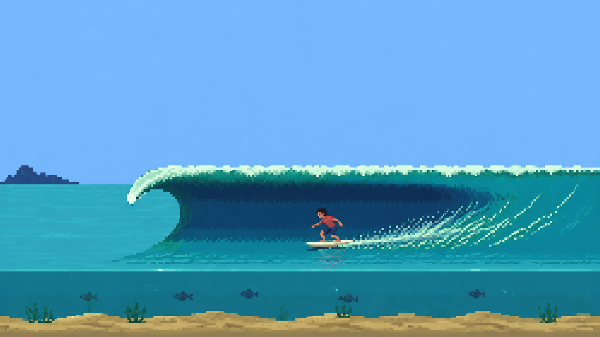
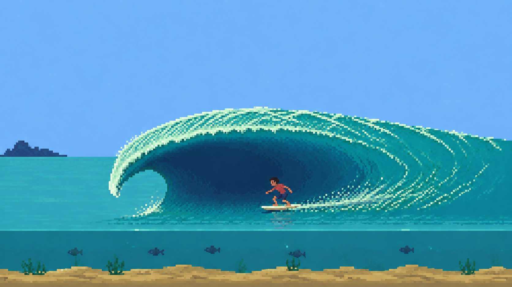
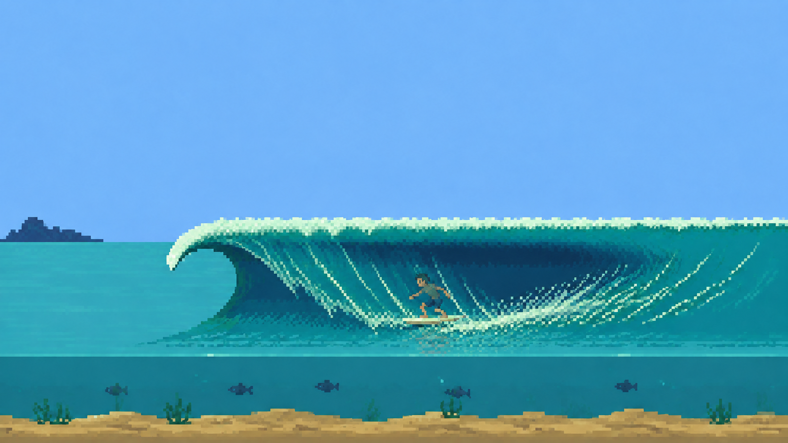

From concept to canvas
The approved concepts on the left, the canvas studies on the right. Follow the foam ribbons and smaller pixel clusters around the curl, through the shadow and down to the trough. These frames stay still.
A. Long wall
A long, shaded face for Long Point.

B. Open hollow
A rounded roof and deeper space for Reef and Nazaré.

C. Water curtain
One continuous lip stays overhead, then falls on the left. That falling sheet creates the tube while the shoulder remains open to the right.
